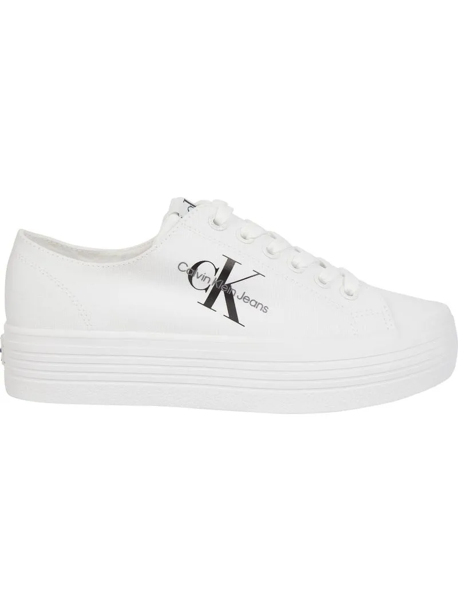
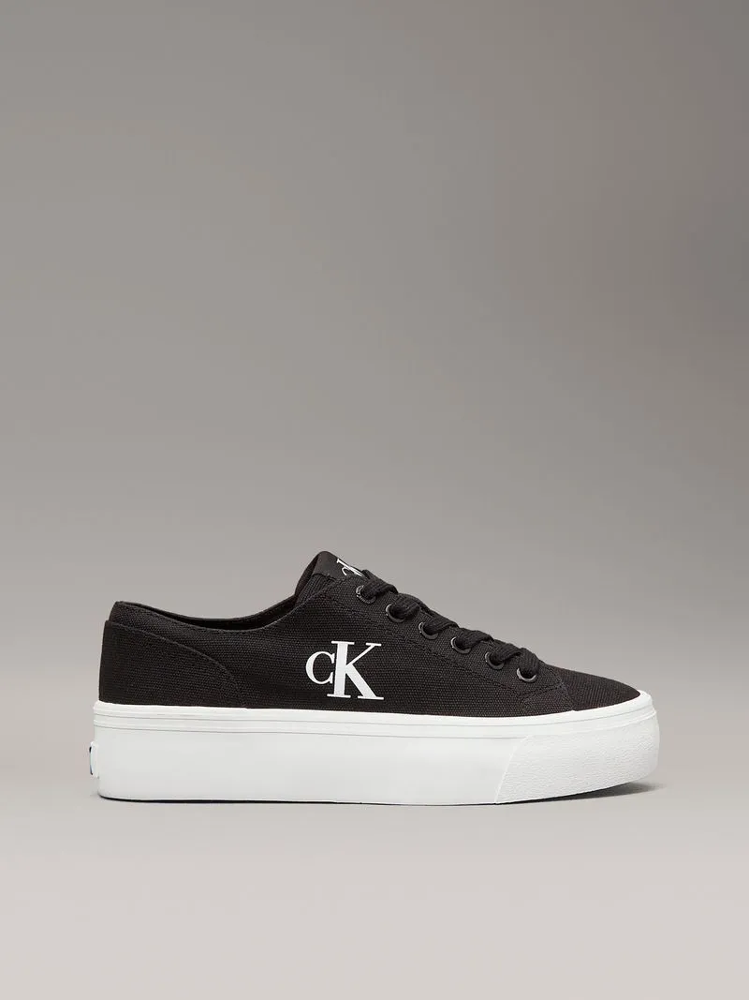
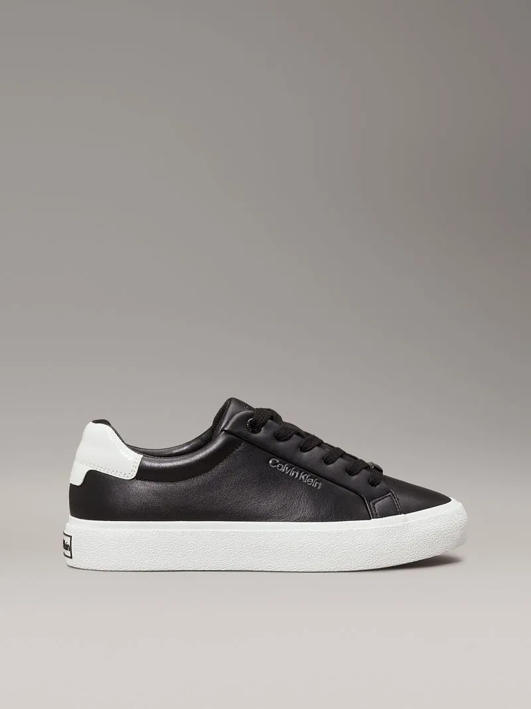
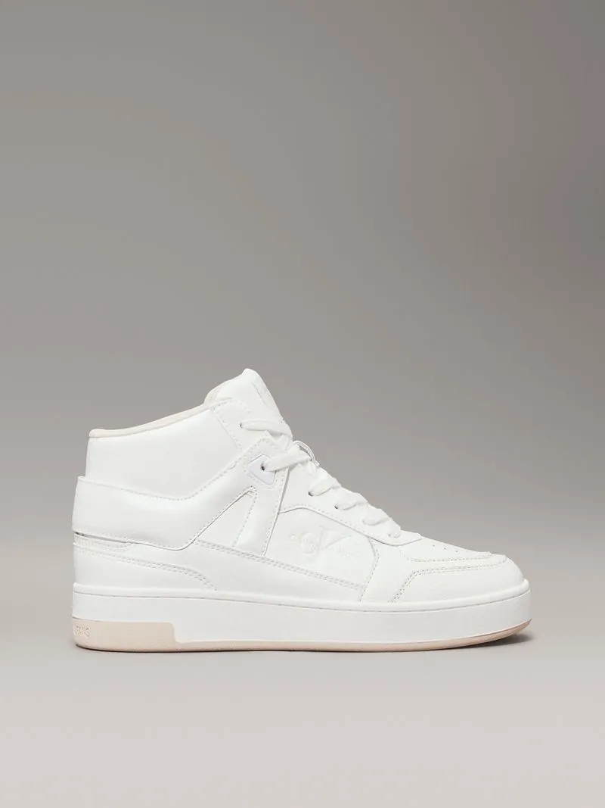

|

Q380.00Descripción del producto ZAPATILLAS CASUALES CON PLATAFORMA |

Q720.00Descripción del producto Zapato tenis de lona con plataforma |
|

Q680.00Descripción del producto Zapato tenis de cuero |

Q1,000.00Descripción del producto Zapato tenis altos de cuero sintético |